This chapter describes the extensive VT510 Set-Up features, which include contemporary windowing techniques that are easy to access. These techniques make it easy to move about and select features. Set-Up is used to examine or change terminal operating features, such as transmit/receive speeds, type of cursor, or key definitions.
2.1 Entering Set-Up
You enter Set-Up by pressing the key designated as the Set-Up key. Pressing this key alternately places the terminal in Set-Up mode or returns it to the operating mode.
| On . . . | The Set-Up key is . . . |
|---|---|
| a VT keyboard layout | F3 on the top row. |
| an Enhanced PC 101/102 keyboard | Caps Lock/Print Screen (or Alt/Print Screen) above the editing keypad. |
The Set-Up function may be reassigned to other key combinations or can be disabled if desired.
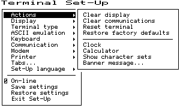 |
The Set-Up display consists of pull-right menus. You can move back and forth with the arrow keys. Pressing Enter, Return, Do, or Select invokes the action or setting for the current menu item.
Set-Up can be programmed to lock out setup; however, when you press F3 as the first key after the terminal is powered on, you always enter Set-Up, regardless of which keyboard you use or how F3 is defined.
2.1.1 Effects of Entering Set-Up
Placing the terminal in Set-Up mode causes no loss of data if a Flow Control protocol is in use on the communications port. When you enter Set-Up by pressing the Set-Up key, the text on the screen temporarily disappears and the first Set-Up menu is displayed on the screen. Upon exiting Set-Up, the previous text is restored.
Entering Set-Up has the following side effects:
- Any compose sequence in progress is aborted and the keyboard is unlocked.
- The Indicator Status Line is enabled and remains enabled while in Set-Up.
- Printer operations are suspended and are resumed upon exiting Set-Up.
2.1.2 Set-Up Languages
The VT510 Set-Up menus can be displayed in five languages using a Set-Up feature. A menu allows you to choose the language in which all subsequent Set-Up menus and displays are written. Selections from this Set-Up language menu (Figure 2–2) take effect immediately. This feature can also be invoked by DECSSL.
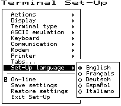 |
2.1.3 Power-On Settings and Defaults
The VT510 terminal stores many of its feature settings in nonvolatile memory (NVM). Nonvolatile memory retains these settings even when power is shut off. In addition to storing operator-selected features, the terminal retains the factory default settings in permanent memory. By using Set-Up, you can modify individual terminal features, recall the feature settings stored in nonvolatile memory, or recall the factory default settings.
In this chapter, the defaults are shown with a solid bullet (•) in lists and in boldface in text.
2.1.4 Self-test Error Messages
At power-up, the VT510 terminal executes a series of self-tests, displays a message indicating whether the self-tests were successful, and displays a banner message. (To change the banner message, see Section 2.4.6.)
If the self-tests detect an error, one of the following messages is displayed on the terminal in place of "Selftest OK."
| Message | Meaning |
|---|---|
| NVR Error - 1 | A firmware update, or loss of power while writing to the NVR during a Save settings process may cause this error. Try Save settings again. It that does not work, Recall factory defaults and select Save settings again. |
| RS-232 Port Data Error - 2 | Communications problem inside terminal. Call for service. |
| RS-232 Port Controls Error - 3 | Communications problem inside terminal. Call for service. |
| Keyboard Error - 4 | Turn the terminal off, and make sure the keyboard cable is plugged in. Turn the terminal on. If the problem continues, try another keyboard. If the new keyboard does not work, the problem is inside the terminal; in which case, call for service. |
| EIA-423 Port Error - 5 | Communications problem inside terminal. Call for service. |
| Parallel Port Error - 6 | Communications problem inside terminal. Call for service. |
| ROM Cartridge Error - 7 | Turn the terminal off, and make sure the ROM cartridge is seated firmly on its connector pins. Turn the terminal on. If the problem continues, try another ROM cartridge. If the new ROM cartridge does not work, the problem is inside the terminal; in which case, call for service. |
2.1.5 Context Sensitivity
On the screen, a check box or radio button indicates the current user selection and normally reflects the operating state of the terminal.
Certain feature selections overlap and could contradict each other, so they cannot be active at the same time. These are called context sensitive features, which are displayed with the dim video attribute in Set-Up. Example:
You cannot select ASCII emulation ▹ Pages menu item when you are in a VT emulation mode, because the Display ▹ Lines per page menu item performs the same function.
When a context sensitive feature is dimmed, it does not affect the user's selection, which may indicate the feature is enabled even though it is not currently selectable. Example:
You cannot have a 10 × 16 font with overscan at 72 Hz. If you select this font size at 72 Hz, Overscan is not available and is dimmed; however, its checkbox can still be checked.
Table 2–2 lists the set-up features that are context sensitive.
| Menu Item | Dimmed when . . . | |
|---|---|---|
| Display ▹ | Lines per screen Lines per page |
WYSE is selected; use ASCII emulation ▹ Data lines and Pages. |
| Cursor direction | Keyboard language is not Hebrew. | |
| Overscan | Display ▹ Refresh rate = 72 Hz and Lines per screen = 42 or 53. | |
| Terminal type ▹ | Terminal ID to host | Terminal type ▹ Emulation mode is other than a VT or SCO console. |
| 7-bit NRCS characters | Emulation mode is set to VT100/VT52; or Communication ▹ Word size is 7-bits; or no 8-bit NRC set exists for the keyboard language. | |
| ASCII emulation ▹ | Terminal type ▹ Emulation mode is set to VT or SCO console. | |
| TVI page-flip | Terminal type ▹ Emulation mode is other than TVI. | |
| Keyboard ▹ | Key encoding ▹ Character, Scan code and Key position | ASCII emulation is selected, or a PC keyboard is connected. |
| Data processing keys | A PC keyboard is connected. | |
| Communication ▹ | Half duplex | The host Communication ▹ Port select is set to S1=comm2. |
| Transmit flow control ▹ DSR and Both | The Modem ▹ Enable modem control is selected. | |
| Receive flow control ▹ DTR and Both | The Modem ▹ Enable modem control is selected. | |
| Modem ▹ | Disconnect delay and Modem speed | The Modem ▹ Enable modem control is not selected. |
| Printer ▹ | Serial print speed, 2-way communication, Transmit flow control, Receive flow control, Word size, Parity, and Stop bits | The Communication ▹ Port select is set to one of the print=parallel selections. |
| DEC/ISO char sets | IBM ProPrinter is selected. | |
| PC character sets | DEC ANSI printer is selected. | |
| Print mode ▹ Controller | Display ▹ Show control characters is selected. | |
2.1.6 Set-Up Summary Line
The Set-Up Summary Line (Figure 2–3) shows the important set-up features that affect whether the terminal can successfully communicate with the host. If the terminal is not working, the Set-Up Summary Line allows you to quickly verify if the communication features are set appropriately. The summary line is displayed below the last data line, where the status line would normally appear.
The Set-Up Summary Line contains the following set-up information extracted from the Set-Up displays.
| Information Displayed | Communication Feature |
|---|---|
| S1=comm1 | Port selected: comm1 or comm2 |
| 9600 | Transmit speed: 9600 baud |
| N | Parity: N=none, E=even, O=odd, M=mark, S=space |
| 8 | Word size: 7 or 8 bits |
| 1 | Stop bits: 1 or 2 bits |
| ISO Latin-1 | Default character set or PC set in PCTerm mode |
| North American | Keyboard language |
| VT510 | Emulation mode |
The summary line is visible whenever the terminal is in Set-Up, except under the following conditions:
- You press a Shift key. Pressing either Shift key causes the normal Indicator Status Line to replace the Set-Up Summary Line.
- The status line is temporarily replaced by an error or status message from the terminal. In this case, the error or status message is shown in place of the status line until you type another key.
The Set-Up Summary Line appears in the currently selected set-up language.
2.1.7 Set-Up Status Messages
The Status or Set-Up Summary line is sometimes replaced by a Set-Up status message until the next user keystroke. Set-Up status messages are displayed whenever the effect of a set-up action would not otherwise be apparent. Example: "Done" is displayed after the Reset terminal action has completed.
The following are set-up status messages:
- Done
- NVR Error
2.1.8 Status Line
The VT510 terminal has a status display with the following features:
- The clock time appears on the status display if the local clock has been initialized since the terminal was last powered on.
- In the ASCII emulation modes, the host-writable status line becomes the WYSE Editing status line.
- The Accessibility Aids feature ("sticky keys") displays icons in the status line. For details, see Chapter 8, Keyboard Processing.
The VT510 Indicator status line includes the Active Position Indicator, Printer Status Indicator, Modem Status Indicator, and local clock time in the desired format. Example:
1(24,008) Printer: None Modem: DSR 3:15 PM
2.1.9 Keyboard Indicator Line
The Keyboard Indicator Line has the following features:
- It is displayed in the Set-Up language.
- It has active keyboard layout. Nothing is displayed for Group 1. "G2" is displayed for Group 2, along with a small icon representing the right side of the top of the keycap. (To see this icon, press Ctrl/Alt/F2. To return from Group 2, press Ctrl/Alt/F1.)
- For Greek, Hebrew, and Russian, "G2" is replaced by "Grk", "Heb", and "Rus", respectively.
- When the Num Lock state is active on an EPC keyboard, "Num Lock" is displayed.
- When an EPC keyboard is operating in VT style, "VT" is displayed in place of the Num Lock indicator.
- In French and Spanish, an icon replaces the word "Lock" on the indicator line.
Example:
Heb Num Lock Copy Hold Lock Compose Wait
Using Define key... to redefine keys on the numeric keypad will affect only the Num Lock off state of these keys. When Num Lock is on, these keys will always send their factory default ASCII numerals and characters. The Num Lock behavior of these keys cannot be reprogrammed.
Scenario: Imagine the keyboard having two numeric keypads: one for Num Lock Off, and the other for Num Lock On. Only the Num Lock Off keypad can be reprogrammed. The Num Lock On keypad retains the factory defaults.
2.2 Set-Up Screen Text
The main menu, shown in Figure 2–4, is the first menu displayed whenever you enter Set-Up. As the first menu, it holds the main directory of Set-Up features and those features which are commonly accessed and must be easy to find at all times. The Actions submenu is also displayed, since the Actions menu item is currently selected.
Unless stated otherwise, the following general descriptions apply:
- Changes to feature settings do not take effect until you exit Set-Up. Only net changes have an effect—a change to a new value and back to an old value has no effect.
- The setting choices for some features are shown in the corresponding Set-Up displays. Where all the choices could not be displayed, additional choices are listed immediately under the figure.
 |
Pressing ⇓ moves the cursor to the next item in the main menu. Pressing ⇒ moves the cursor right to the first item of the submenu, making it the active menu.
2.3 Main Menu
The following descriptions refer to Figure 2–4.
The items above the dividing line in the main menu form a directory to the major functional areas of set-up features. Each item has a corresponding submenu or dialog box. Below the dividing line are features that need to be easy to find from any menu.
2.3.1 On-Line
The On-line feature allows you to select whether the terminal directs keyboard input to its host port UART to communicate with a remote host (On-Line), or directs keyboard input directly to the screen (receive character parser) without sending to a remote host (off-line or local).
The On-line selection is different from the Local echo mode in the Communications Set-Up submenu. When On-line is disabled (local mode), nothing is sent to the host. Any keyboard input is directed to the receive character parser, which updates the screen.
In contrast, Local echo causes characters sent to the host port to also be directed back to the receive character parser, as if they had been received (echoed) from the host. Local echo is temporarily disabled when the terminal is in either Local mode or Local Controller mode, because keyboard input is already being redirected to the screen or printer port.
If an NVR error occurs during power-up, the terminal switches to Local mode.
Terminal reports, such as Answerback, DA, CPR, DECTSR, DECRPM, DECRPSS, DECAUPSS, DECCIR, DECTABSR and DSR, are not directed to the display. While in "local", host communications are put on "hold": All data received is buffered. If necessary, an XOFF is sent (or DTR is deasserted) to prevent buffer overflow. This buffered data is directed to the display when On-line mode is reentered. Note that the received character buffer (silo) is responsible for sending XON and XOFF when needed, not the On-line/Local state.
When in Local mode, modem signals, including DTR, are unaffected. No disconnect is performed. The functions of the printer port remain unchanged in Local mode. They function the same as in On-line mode.
When in Local mode and Printer To Host mode is selected, data from the printer port is displayed on the video terminal.
When both Local mode and Printer Controller mode are selected, the terminal is in Local Controller mode. Keyboard characters are sent to the printer port. Note that in "regular local" mode, any keyboard output is directed to the screen, but in "regular controller" mode, the keyboard output is directed at the host port. When Local Controller mode is exited to Local mode, the terminal redirects keyboard output from the printer to the screen (and parser). When you change from Local Controller mode to Printer Controller mode, the terminal transmits the characters accumulated in the receive silo to the printer.
2.3.2 Save Settings
The Save settings menu item, when invoked by pressing Return or Enter, causes the settings for most Set-Up controlled operating features to be saved in nonvolatile memory, where they become the power-on settings. These features include:
- Cursor direction
- Copy direction
- Auto wrap mode
- CRT saver
- Overscan
- Refresh rate
- Emulation mode
- VT default character set
- PCTerm mode and default character set
- Transmit 7-bit controls
- ASCII emulation features
- Keyboard language (VT or PC, not both)
- Up to 60 defined keys—Individual keys can have up to 255 characters. Limit = 804 bytes.
- All Communication submenu features (port select, word size...)
- All Modem submenu features
- All Printer submenu features
- Set-Up language
The Keyboard encoding mode is not saved.
2.3.3 Restore Settings
Restore settings is an action field that is used to replace all saved Set-Up parameters with the values stored in the NVR. As a side effect, this feature performs a disconnect sequence, clears the screen, reinitializes the user-definable keys (as saved), clears the soft character set, returns the cursor to the upper left corner, aborts any print operation in progress, aborts ESC, CSI, and DCS sequences (and control strings), and shows "Done" on the status line. This action can also be invoked by the RIS control function.
2.3.4 Exit Set-Up
The Exit Set-Up menu item, when invoked by pressing Enter, causes the terminal to exit Set-Up. The effect is identical to pressing the Set-Up key while in Set-Up.
2.4 Actions Menu
The following descriptions refer to Figure 2–4. Certain Set-Up features instruct the terminal to perform an immediate action when they are invoked. These features are grouped in the terminal Actions menu.
2.4.1 Clear Display
The Clear display feature clears the active page (including the lines which have temporarily disappeared while the you are in Set-Up).
2.4.2 Clear Communications
This feature is used to clear communication buffers and flags. It does not affect the On-Line/Local state. It is not invoked by any control functions.
Clear communications:
- Aborts any print operation in progress
- Aborts any escape sequence, control sequence, control string, or character string processing (ESC, CSI, DCS, APC, OSC, PM, SOS)
- Clears the keyboard buffers
- Clears the receive silo
- Clears the transmit silo
- Takes the terminal out of Printer Controller mode
- Sends XON on to the host port
- Sends XON to the printer port if Printer To Host and XOFF are enabled
- Resets XOFF received flags on both ports
- Does not clear the screen
- Clears KAM locked condition
- Clears the "printer port has seen DSR since power up" flag
2.4.3 Reset Terminal
The Reset terminal Set-Up feature resets the terminal to a "known state." This function is like Soft Terminal Reset (DECSTR), except DECSTR resets the Character Set mode to "8-bit Characters" and Reset terminal does not.
Additions:
- Keyboard encoding is reset to "character."
- PCTerm mode is not selected.
From Set-Up, a soft reset using Reset terminal always works regardless of the terminal mode; but using mode changing control functions (DECSCL, S8C1T, S7C1T, DECANM), the soft reset is sometimes not performed.
2.4.4 Restore Factory Defaults
Restore factory defaults is an action field that is used to replace all existing Set-Up parameters with the values stored in ROM (the factory defaults). As a side effect, it does the following:
- Performs a disconnect sequence
- Clears the screen
- Reinitializes the user-definable keys
- Clears the soft font
- Returns the cursor to upper-left corner
- Aborts print operations in progress
- Aborts ESC, CSI and DCS sequences
- Displays the "Done" message on the status line
2.4.5 Clock, Calculator, Show Character Sets
The Clock, Calculator, and Show character sets menu items are used to invoke the corresponding desktop productivity features. Refer to Chapter 3.
2.4.6 Banner Message
The Banner message menu item invokes a dialog box with a 30-character limit. When this feature is selected, a dialog box is displayed with a reverse video text entry area 30 characters long. If a Banner message is currently defined, the message is displayed in the text entry area. The ⌫ or Delete key can then be used to delete backwards and enter a new Banner message.
All characters that can be generated by the keyboard are legal in this field (including primary and secondary keyboard language characters). As such, no errors are reported, except when trying to enter more than 30 characters. In this case, the bell rings (if enabled), and no more characters are accepted. The factory default message is no message at all (a blank field).
From the Actions menu, select Banner message....
- Press Return or Enter to display a dialog box.
- Enter your banner message.
- Press the ⇓ to select OK button.
- Press Return or Enter to return to the Set-Up menu.
- Use the Save settings menu item to save the Banner message.
2.5 Display Menu
Many of the features in Figure 2–5 can be controlled by the host control sequences listed in Table 2–3. The control functions are described in Chapter 5, ANSI Control Functions.
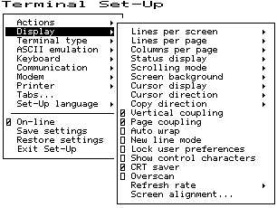 |
| Set-Up Feature | Control Function |
|---|---|
| Lines per screen | DECSNLS |
| Lines per page | DECSLPP |
| Columns per page | DECSCPP, DECCOLM |
| Clear on change | DECNCSM |
| Auto resize | DECARSM |
| Status display | DECSSDT |
| Scrolling mode | DECSCLM, DECSSCLS |
| Screen background | DECSCNM |
| Cursor display | DECTCEM, DECSCUSR |
| Cursor direction | DECRLM |
| Copy direction | DECRLCM |
| Vertical coupling | DECVCCM |
| Page coupling | DECPCCM |
| Auto wrap | DECAWM |
| New line mode | LNM |
| Show control characters | CRM |
| CRT saver | DECCRTSM |
| Overscan | DECOSCNM |
| Refresh rate | DECSRFR |
2.5.1 Lines per Screen
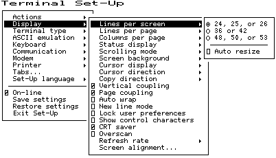 |
This menu (Figure 2–6) chooses a font that enables the selected number of lines to be viewed. Note that you cannot view more lines than the number of lines on a page (Lines per page).
If the Status display is enabled, it is displayed using one of the same Lines per screen as the text for the corresponding session.
This is an operator preference feature and cannot be changed by control functions if the operator preference is set to Lock user preferences; however, if Auto resize is enabled at the same time, then the number of Lines per screen changes when the page size changes.
This feature can be changed from the host using the DECSNLS control function. Or, it may be changed indirectly from the host if Auto resize is selected and the page configuration is changed using DECSLPP.
2.5.1.1 Auto Resize
When Auto resize is enabled, the number of lines per screen changes automatically each time the page arrangement changes, either by the host or through Set-Up. Table 2–4 shows how the screen size changes whenever the page size changes when Auto Resize is set.
| Lines per Page | Lines per Screen |
|---|---|
| 24 | 26 |
| 25 | 26 |
| 36 | 43 |
| 42 | 43 |
| 43 | 43 |
| 48 | 52 |
| 52 | 52 |
| 72 | 52 |
2.5.2 Lines per Page
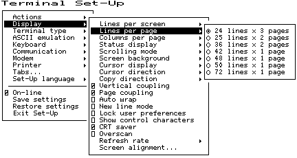 |
This menu (Figure 2–7) allows you to select the page size in lines and number of pages. The page size determines the addressing range for cursor positioning and scroll regions. The number of lines that can be displayed depends on the current setting of the Lines per screen feature.
This field is also invoked by the DECSLPP control function.
2.5.3 Columns per Page, Clear on Change
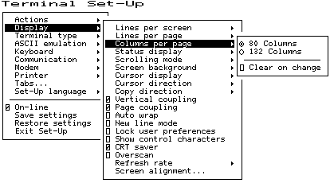 |
This menu (Figure 2–8) allows you to select an 80- or 132-column display for text. If Clear on change is disabled, changing this feature does not clear page memory, except when changing from 132 columns to 80 columns; then, columns 81 through 132 of each page are cleared. Changes to this field take effect immediately.
This field is also invoked by the DECSCPP and DECCOLM control functions. The Clear on change feature invokes the DECCOLM sequence only. It does not erase page memory.
2.5.4 Status Display
The Status display can be enabled in the selections shown in Figure 2–9.
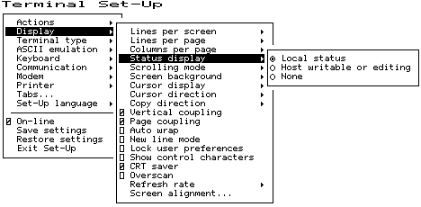 |
2.5.5 Scrolling Mode
The Scrolling mode menu allows you to select how fast lines appear on the screen.
| Scroll Selection | Scroll Rate |
|---|---|
| Slow smooth | Smooth steady scroll at approximately 9 lines per second (two scan lines per frame time). |
| Fast smooth | Smooth scrolls at approximately 18 lines per second. |
| Jump | Displays new lines as fast as they are received, causing a jump scroll on the screen. |
This is a user-preference feature. If Lock user preferences is set, then this field is not invoked by any control functions.
2.5.6 Screen Background
The Screen background can be either dark or light, with dark as the default.
2.5.7 Cursor Display
The Cursor display can be enabled in the selections shown in Figure 2–10.
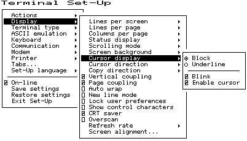 |
2.5.8 Cursor Direction
The Cursor direction default is left to right. If a Hebrew keyboard is connected to the terminal, a selection is available for right to left.
2.5.9 Copy Direction
The Copy direction default is left to right. If desired, you can change this selection to right to left. The cursor direction and the copy direction should be matched.
2.5.10 Vertical Coupling
Vertical coupling selects whether the user window automatically pans to follow the cursor when the cursor is moved vertically to a part of the page that is not in the currently displayed user window. Panning does not occur until the input buffer becomes empty and the cursor is displayed.
When Vertical coupling is disabled, the user window does not follow the cursor. If the cursor moves above or below the visible portion of the page, the cursor is no longer visible.
2.5.11 Page Coupling
Page coupling selects whether the user window automatically follows the cursor when the cursor is moved to a page that is not currently in the user window. When page coupling is enabled, moving the cursor to a page that is not currently displayed causes that page to be displayed. Panning does not occur until the input buffer becomes empty and the cursor is displayed.
When Page coupling is disabled, the user window does not follow the cursor. If the cursor moves to a page that is not currently displayed, the cursor is no longer visible.
2.5.12 Auto Wrap
Auto wrap selects where a received character is displayed when the cursor is at the right margin.
This field can be invoked by the DECAWM control function. The Auto wrap setting can be saved in NVM.
2.5.13 New Line Mode
When enabled, New line mode selects the characters transmitted by Return, CR, or CR+LF. It also determines the action taken by the terminal when receiving line feed, form feed, and vertical tab, LF, or CR+LF.
This feature can be invoked by the LNM (SM/RM) control function.
2.5.14 Lock User Preferences
The Lock user preferences feature allows you to prevent the host from modifying user-preference features. If set to lock, the user-preference features cannot be changed by host control functions.
The following user-preference features are locked and unlocked by this feature and when locked, cannot be changed by control functions:
- Auto repeat
- Scrolling mode
- Screen background
- Tab stops
- Keyboard definitions
- Lines per screen
- Auto resize
- Overscan
- Refresh rate
2.5.15 Show Control Characters
Show control characters allows you to select a normal display or a display called Control Representation mode or CRM. This "monitor and show all" display includes graphic representation of control characters.
When Show control characters is enabled, special CRM symbols are used for the C0 and C1 control areas of ISO 2022 conforming character sets. Other characters are displayed using the current user preference supplemental set. See Chapter 4, ANSI Control Functions Summary.
2.5.16 CRT Saver
If the CRT saver feature is enabled and the terminal is inactive for 30 minutes (no keyboard activity or input from a host computer), the monitor screen goes blank to reduce wear on the CRT. No data is lost when the CRT saver feature is active. Any keyboard activity or input from the host computer reactivates the monitor. The factory default setting is CRT saver enabled.
When the monitor goes blank, a blinking hollow cursor is displayed in the lower-right corner of the screen.
2.5.17 Overscan
Overscan can be enabled for most character fonts. Overscan is disabled (dimmed) when the display Refresh rate is set to 72 Hz and the Lines per screen is set to either 36 or 48 lines.
2.5.18 Refresh Rate
The screen Refresh rate can be set to 72 Hz (default) or to 60 Hz.
2.5.19 Screen Alignment
The Screen alignment menu item is used to invoke a screen alignment display (Figure 2–11). For international units only, screen rotation is provided to compensate for the Earth's magnetic field. Follow the instructions on the screen.
Hold down the Shift key while using the four arrow keys Hold down the Control key while using the left and right arrow keys Press Enter to return to the Set-Up menu. |
2.6 Terminal Type Menu
You can select terminal type and emulation modes using the menu shown in Figure 2–12.
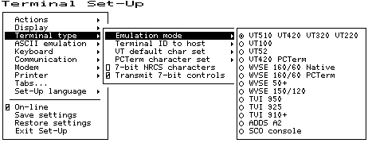 |
2.6.1 Emulation Mode
Emulation mode is the primary means of selecting different terminal modes or emulations. Changing terminal modes or emulations usually performs some initialization of the terminal state.
Example: Selecting a VT mode performs a soft terminal reset (DECSTR).
PCTerm mode can be selected or deselected independently from the other emulations. The ASCII modes use WYSE PCTerm emulation. The ANSI modes use VT420 PCTerm emulation.
This feature corresponds to the DECPCTERM, DECTME, DECANM, and DECSCL control functions described in Chapter 5, ANSI Control Functions.
Changing the conformance level (DECSCL) does not change the operating level reported to identify the terminal to the host. It only changes the way extensions are reported.
- Printer operations are not affected or halted by a change in mode.
- A soft reset is always performed as a result of a mode change from Set-Up.
- Changes resulting from most, but not all, of the above sequences also cause a soft reset. Exception: Entering VT52 mode (via DECANM) does not cause a soft reset from VT100 mode, but does cause a soft reset from VT500 mode.
2.6.2 Terminal ID to Host
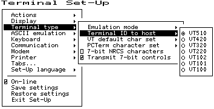 |
Terminal ID to host (Figure 2–13) selects how the terminal identifies itself to host software, specifically the Primary Device Attributes response (DA). The default ID is "VT510." For a list of the responses, see the Device Attributes sections in Chapter 5. This field has no effect when the terminal is in VT52 mode. The feature corresponds to the DECTID control function described in Chapter 5.
2.6.3 VT Default Character Set
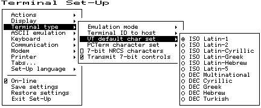 |
This feature (Figure 2–14) selects the default international character set to use for output as initialized in G0-G3 and GL/GR. It corresponds to the DECAUPSS (Assign User Preference Supplemental Set) control function described in Chapter 5.
Only ISO Latin-1 and DEC Multinational are available on the North American terminal.
2.6.4 PCTerm Character Set
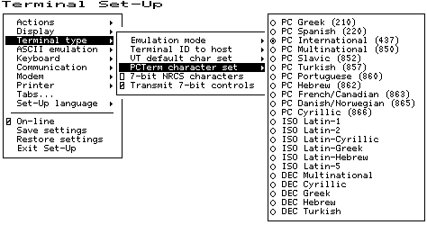 |
This feature (Figure 2–15) selects which PC code page will be used in PCTerm mode. This feature is also invoked by the DECPCTERM control function described in Chapter 5.
PC Greek, PC Spanish, PC International, PC Multilingual, and PC French/Canadian are available on the North American terminal.
2.6.5 7-Bit NRCS Characters
This feature enables National Replacement Character Set mode (DECNRCM), as described in Chapter 5. When 7-bit NRCS characters are selected, a corresponding 7-bit NRC set is used depending on the keyboard language. See Chapter 8, Keyboard Processing for details. Group 2 or secondary keyboard language characters may still be used if they are in the 7-bit character set. This feature is dimmed unless there is a corresponding NRC set available.
2.6.6 Transmit 7-Bit Controls
Transmit 7-bit controls selects whether C1 control codes are sent in their original 8-bit form (disabled) or converted to their 7-bit ESC Fe form.
This field is invoked by a parameter to the DECSCL control function and by the S7C1T and S8C1T control functions.
2.7 ASCII Emulation Menu
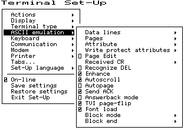 |
The features, shown in Figure 2–16 and listed in Table 2–5, are specific to the ASCII emulation modes supported in the VT510. The default is shown in boldface type. Refer to Part III for details.
| Feature | Selections | Determine... |
|---|---|---|
| Data lines | 24, 25, 42, 43 lines | The number of data display lines visible, not counting any status lines. |
| Pages | 1 × lines 2 × lines 4 × lines * |
The page size and number of pages. 1 × lines selects each page to be the number of data lines visible on the screen. The * makes the display of a single page invisible. |
| Attribute | Character, line, or page | How visual attributes are applied per character, line, or page. |
| Write protect attributes | Dim, blank, reverse, underline, and/or blink. | The visual attributes used to highlight and specify write protected data. |
| Received CR | CR or CRLF | Carriage return or carriage return line feed. |
| Block Mode | Conversation or Block | Transfer method. |
| Block End | US/CR or CRLF/ETX | At the end of a block transfer, transmit a carriage return or an end-of-text character. |
2.8 Keyboard Menu
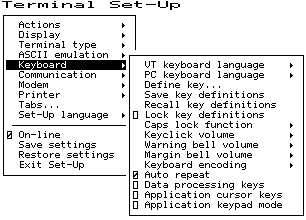 |
Several of the features shown in Figure 2–17 are self-explanatory and correspond directly to control functions listed in Table 2–6. For additional information, see Chapters 4 and 5.
| Set-Up Feature | Control Function |
|---|---|
| Keyboard language | DECKBD |
| Switch between primary and secondary keyboard language | DECESKM (general), DECHEBM (Hebrew), DECNAKB (Greek), DECCYRM (Cyrillic) |
| Caps lock function | DECSLCK |
| Keyclick volume | DECSKCV |
| Warning bell volume | DECSWBV |
| Margin bell volume | DECSMBV |
| Keyboard encoding | DECKPM |
| Auto repeat | DECARM |
| Data processing keys | DECKBUM |
| Application cursor keys | DECCKM |
| Application keypad mode | DECKPNM, DECKPAM, DECNKM |
2.8.1 Keyboard Language
Some keyboards allow you to select two different keyboard layouts and easily switch between them (English and Hebrew, for example). This feature allows the VT510 to support both existing conventions and emerging standards for extending the graphic input and/or switching between languages in dual language environments. (The North American keyboard has only one keyboard language, English.)
The primary keyboard language corresponds to Group 1 (per DIN 2137) and generally references the legends on the left half of the keytops.
The secondary keyboard language corresponds to Group 2 (Group Shift per DIN 2137) and generally references the legends on the right half of the keytops.
Unless overridden, Ctrl/Alt/F1 makes the primary keyboard language active, and Ctrl/Alt/F2 makes the secondary keyboard language active. (These are factory defaults, standard on PCs.)
Selecting a new keyboard language in Set-Up automatically initializes the keyboard character set, as described in Chapter 8, Keyboard Processing.
Changes to this field take effect immediately. Changing this field to North American or Dutch and then exiting Set-Up or going to another menu resets the 7-bit NRCS characters feature to disabled. There is no "7-bit characters" mode for the North American or Dutch keyboards. This field affects the language of the keyboard indicator line.
2.8.2 Define Key Editor
The Define Key Editor is an advanced function that allows the terminal to adapt to environments that do not match the preprogrammed settings.
This function is designed to be easy to use; however, unless you understand the consequences of remapping various key combinations, use caution when using this feature. When you press F3 as the first key after the terminal is powered on, you always enter Set-Up, regardless of which keyboard you use or how F3 is defined.
The Define key menu invokes the Define Key Editor.
To ensure consistent access to Set-Up features, the following rules apply for interpreting keystrokes.
- Within Set-Up and the Define Key Editor, the four arrow keys along with Enter, Return, Do, and Select are interpreted according to their standard definitions, regardless of how they may be redefined at other times. The one exception is when pressing the key to be defined.
- When copying one key definition to another, the standard key definition for a key is copied, not the current definition. This copy method ensures that keyboard functions are not lost within the Define Key Editor.
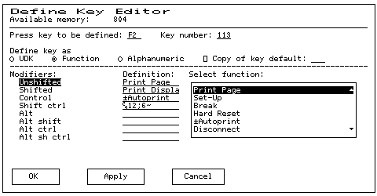 |
2.8.2.1 Copy of Key Default—Moving a Standard Function
The simplest way to reprogram a key is to copy the behavior of another key. You can use Copy of key default to copy the factory default for a key to be defined to any position on the keyboard. You cannot, however, use this feature to edit the code transmitted by individual keys. To move factory default key functions:
- From the Keyboard menu item, select the Define key . . . function, and the Define Key Editor menu will appear.
- Press the key for which you want to assign a new behavior. If the key is a function key, a screen similar to Figure 2–18 is displayed. Names are displayed in the Set-Up language selected (not according to keyboard language). The ± symbol indicates a toggle feature. Names are truncated to 12 characters in the definition field.
- Press ⇒ to highlight the Copy of key default radio button and press Enter.
- Press the key whose factory default behavior is what you want your defined key to do.
- Press ⇓ to highlight the OK or Apply button and press Enter.
2.8.2.2 Customization
If you want to program a key to behave differently than one of the factory defined keys, then you will need to know about the following VT510 key categories:
| Function: | Keys such as the arrow keys (⇑, ⇓, ⇐, ⇒), the Shift modifier key, or the Set-Up key, used to transmit function key sequences or to perform local terminal functions. |
| Alphanumeric: | Keys used to transmit alphanumeric characters. |
2.8.2.3 Modifier Keys
Modifier keys vary from within the Function and Alphanumeric categories. A modifier key is a key that modifies the behavior of other keys when it is pressed and held down. For example, pressing an alphanumeric key in combination with the Shift modifier key will normally send the shifted or uppercase characters for that key.
Modifier keys are treated as a special kind of local terminal function. The VT510 function modifier keys are: Shift, Ctrl, and Alt. VT510 alphanumeric keys can also be modified by pressing Group Shift (Alt Gr on enhanced PC keyboards) and Alt/Shift (Shift-2). Modifier keys themselves cannot normally be modified by other keys. A key assigned to act as the Shift modifier, for example, cannot transmit a function sequence when pressed in combination with Alt. Defining a key as a modifier key makes all assignable combinations of that key act as a modifier.
2.8.2.4 Creating a New Function
To define a new function key:
- From the Keyboard menu item, select the Define key . . . function, and the Define Key Editor menu will appear.
- Press the key for which you want to assign a new behavior.
- Press the ⇐ or ⇒ key to highlight the Function radio button and press Enter.
- Press the ⇑ and ⇓ keys to highlight the modifier combination that you want to define (Unshifted, Shifted, Control, and so on) and press Enter.
- Press the ⇒ key to move to the Select function scroll box. Press the ⇑ and ⇓ keys to highlight the desired keystroke function from the list and press Enter.
- Press the ⇐ key to return to the Modifiers.
- Repeat steps 4 through 6 to define other modifier combinations as desired.
- Use the arrow keys (⇑, ⇓, ⇐, ⇒) to highlight the OK or Apply button and press Enter.
2.8.2.5 Examples of Creating New Functions
Examples of when to create new functions include:
- Changing the ⌫ or Delete key to delete when unshifted and to backspace when shifted.
- Disabling the Compose, Break, and Set-Up keys by assigning them to have no function.
2.8.2.6 Correcting a Mistake
If you make a mistake or want to start over, select the Cancel button or select the Exit Set-Up menu item. Your changes will not be recognized until you select the OK or Apply button. To save key definitions, select the Save key definitions menu item from the Keyboard menu.
The Define Key Editor is very powerful and you may make mistakes in learning how to use it. But no matter how you redefine the keys, you can always enter Set-Up by pressing F3 after powering on. Additionally, you can always select the Restore factory defaults menu item from the Actions menu.
2.8.2.7 Creating A New Alphanumeric Key or Keyboard Layout
The method for creating a new alphanumeric key is similar to that for function keys, except that you can define different modifier combinations and you enter alphanumeric values differently.
If the key was previously programmed as a function key, the function definition will be empty. Once any function definition is applied, all the alphanumeric definitions for that key are lost. A single key cannot act as both a function key and an alphanumeric key simultaneously.
To define a new alphanumeric key:
- From the Keyboard menu item, select the Define key . . . function, and the Define Key Editor menu will appear.
- Press the key for which you want to assign a new behavior.
- Press the ⇐ or ⇒ key to highlight the Alphanumeric radio button and press Enter. The character transmitted when this key is unshifted is highlighted.
- To select a different character, press the corresponding key on the keyboard, or use the numeric compose key to generate a new character.
- If desired, press the ⇒ key to move to the Non-spacing accent scroll box. Press the ⇑ and ⇓ keys to highlight any non-spacing accent from the list and press Enter.
- The code transmitted by the unshifted alphanumeric key when pressed in combination with the Control key is calculated automatically and displayed in the Definition column. If desired, you may redefine this function.
- If desired, select an Alt Function modifier combination for the alphanumeric key from the Select Function scroll box. You may choose a function, including a user-defined key (UDK) sequence. The default for the Alt Function is None.
- Press the ⇐ key to return to the modifier selection.
- Use the arrow keys (⇑, ⇓, ⇐, ⇒) to highlight the OK or Apply button and press Enter.
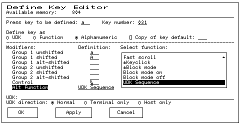 |
To enter alphanumeric values you can type the desired character or numeral, you can compose the desired character including numeric keypad compose, or you can select a nonspacing accent from the nonspacing accent scroll box.
2.8.2.8 Examples of Creating New Alphanumeric Keys
Examples of when to create new alphanumeric keys include:
- Making the comma and period keys send comma and period instead of angle brackets when shifted.
- Changing the keyboard from a QWERTY to QWERTZ layout.
- Defining an alternate key layout to match your own preference or local typing conventions (Dvorak, or Russian Cyrillic, instead of Bulgarian Cyrillic).
2.8.2.9 User-Defined Keys
The UDK radio button allows any key to be programmed with a user-defined sequence. UDKs are a subset of function keys. A separate UDK dialog box is provided for simplicity. Selecting UDK causes a UDK: text field to be displayed so you can enter a key sequence. This text field can scroll left or right as needed to allow longer strings to be entered.
Press ⇓ again to move the highlighting cursor to select one of the following UDK directions:
| • | Normal | The sequence is sent to the host and/or to the screen depending on the communication settings (On-line, Local echo, Half duplex, and so on). |
| ◦ | Terminal only | The sequence is sent only to the screen, as if it had just been received from the host. |
| ◦ | Host only | The sequence is sent only to the host, regardless of the communication settings. |
Press ⇓ again to select one of the following buttons:
| OK | Apply | Cancel |
When you select Cancel, you only cancel the changes to the currently selected modifier combination.
2.8.2.10 Programming Notes
- When you press F3 as the first key after the terminal is powered on, you always enter Set-Up, regardless of how F3 is defined.
- If a key is programmed to act as a modifier key, it operates as a modifier with any combination of Shift, Alt, or Control.
- If a key is programmed to be a modifier key and modifier key reporting is enabled using DECSMKR, the key sends the VT sequence for the left modifier key when there is more than one.
- Caps Lock combinations such as Caps Lock/Print Screen are local keyboard extensions and cannot be reprogrammed by DECPFK. The Caps Lock key acts as a modifier. The Caps Lock function can be moved to another key, but Pause must still send the Break.
- Use of the Define Key Editor to redefine keys on the numeric keypad affects only the Num Lock off state of these keys. When Num Lock is engaged, these keys will always send their factory default ASCII numerals (and related characters) intended for numeric input. The Num Lock behavior of these keys cannot be reprogrammed. (This Num Lock behavior does not apply to numeric keypad mode on the VT keyboard or PC keyboard in VT style.)
- The toggle Num Lock function can be assigned to any single key combination. Although the Num Lock state modifies other keys, the toggle Num Lock function is not a modifier key. This means modifier combinations of Num Lock/Key can be assigned to any other function or user-defined sequence.
- Use of the numeric keypad to compose characters by entering their decimal code in combination with Alt Gr or Compose (held down) should continue to work regardless of any reprogramming of keys on the numeric keypad, unless such reprogramming directly conflicts with use of the keypad in this manner. Example: A numeric keypad key has been defined as Compose or Alt Gr.
- Function keys also work in VT100 mode.
2.8.3 Save Key Definitions
To save your key definitions so they will be available the next time you turn the power on, select the Save key definitions menu item from the Keyboard menu.
This action field on the keyboard menu (Figure 2–17) causes the Define key modifications to be saved to nonvolatile memory independently from any other Set-Up features. Key definitions are saved on a first-come first-served basis and are limited by the total amount of nonvolatile memory available.
This feature cannot be invoked by a host control function.
2.8.4 Recall Key Definitions
This action field causes previously saved Define key modifications to be recalled from nonvolatile memory independently from any other Set-Up features.
2.8.5 Lock Key Definitions
The Lock key definitions menu item operates as a check box. When key definitions are locked, they cannot be reprogrammed from the host.
2.8.6 Caps Lock Function
This function allows you to enable the Lock or Caps Lock key to do the following:
| • | Caps lock | Lock alpha keys on main keypad in uppercase setting. |
| ◦ | Shift lock | Lock alpha and numeric keys on main keypad in shifted setting. |
| ◦ | Reverse lock | Lock numeric keys in shifted setting, but lock alpha keys in lowercase setting. |
2.8.7 Keyclick, Warning Bell, and Margin Bell Volume
The volume of these settings can be set to high, low, or off, with high as the default.
2.8.8 Keyboard Encoding
The Keyboard encoding menu allows you to select from the following:
| • | Character (ASCII) | The keyboard uses normal ANSI/ISO character encoding. |
| ◦ | Scancode | The keyboard transmits a scancode that represents the physical position of the key pressed within the keypad array. |
| ◦ | Key position | The keyboard transmits key position codes for each down transition. This menu allows alternate keyboard layouts to be supported by application software. |
This feature corresponds to the DECKPM (key position mode) control function described in Chapter 5, ANSI Control Functions.
2.8.9 Auto Repeat
The Auto repeat feature selects whether keys begin auto repeating if still held down after a delay interval. The repeat rate is the number of "keystrokes" per second, not characters per second. Changes to this field take effect immediately.
This is a user-preference feature. When it is unlocked, this feature can be invoked by the DECARM control function.
2.8.10 Data Processing Keys
This feature corresponds to the DECKBUM control function described in Chapter 5, ANSI Control Functions. Changes to this field take effect immediately.
2.8.11 Application Cursor Keys
This feature corresponds to the DECCKM control function described in Chapter 5, ANSI Control Functions. This feature cannot be saved in NVM and is reset to the factory default setting by DECSTR. This feature cannot be locked. Changes to this field take effect immediately.
2.8.12 Application Keypad Mode
This feature selects whether the numeric keypad sends ASCII numerals or application function sequences. It corresponds to the DECKPNM, DECKPAM, and DECNKM control functions described in Chapter 5, ANSI Control Functions.
This field is not stored in NVR. This field is reset to the power-up setting when a soft reset occurs (Reset Session or receipt of DECSTR).
This field is not a user-preference feature. It cannot be locked. Changes to this field take effect immediately so you can use the keypad to enter an Answerback message.
2.9 Communication Menu
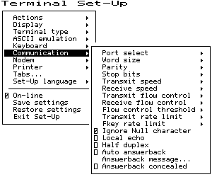 |
Several of the Communication features shown in Figure 2–20 are self-explanatory and correspond directly to control functions listed in Table 2–7. These functions are described in Chapter 5, ANSI Control Functions.
| Set-Up Feature | Control Function |
|---|---|
| Comm port select | DECSCP |
| Comm word size | DECSPP |
| Comm parity | DECSPP |
| Comm stop bits | DECSPP |
| Comm transmit speed | DECSCS |
| Comm receive speed | DECSCS |
| Comm transmit flow control | DECSFC |
| Comm receive flow control | DECSFC |
| Comm flow control threshold | DECSFC |
| Transmit rate limit | DECXRLM, DECSTRL |
| Fkey rate limit | DECXRLM, DECSTRL |
| Ignore Null character | DECNULM |
| Local echo | SRM |
| Half duplex | DECHDPXM |
| Auto answerback | DECAAM |
| Answerback message | DECLANS |
| Answerback concealed | DECCANSM |
2.9.1 Port Select
This selection enables the cable configuration at the back of the terminal as follows:
| • | S1=comm1 print=comm2 |
| ◦ | S1=comm1 print=parallel |
| ◦ | S1=comm2 print=comm1 |
| ◦ | S1=comm2 print=parallel |
2.9.2 Word Size
The communication word size can be 8 bits (default) or 7 bits.
2.9.3 Parity
You can select any of the following parity checks:
| • | None |
| ◦ | Even |
| ◦ | Odd |
| ◦ | Even, unchecked |
| ◦ | Odd, unchecked |
| ◦ | Mark |
| ◦ | Space |
2.9.4 Stop Bits
For communication, 1 (default) or 2 stop bits can be enabled.
2.9.5 Transmit Speed
The communication Transmit speed is set to 9600 baud. You can select transmit speeds from the menu shown in Figure 2–21.
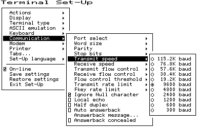 |
2.9.6 Receive Speed
Like the communication Transmit speed, you can select the Receive speed from 300 to 115.2K baud. The default receive speed matches the transmit speed selection.
2.9.7 Transmit Flow Control
The Transmit flow control method can be one of the following:
| ◦ | None |
| • | XON/XOFF |
| ◦ | DSR (Data Send Ready) |
| ◦ | Both |
When an ASCII emulation is selected, the default Transmit flow control is None.
2.9.8 Receive Flow Control
The Receive flow control method can be one of the following:
| ◦ | None |
| • | XON/XOFF or XPC |
| ◦ | DTR (Data Transmit Ready) |
| ◦ | Both |
2.9.9 Flow Control Threshold
You can set the Flow control threshold to Low (64 characters) or to High (768 characters). The default is 64.
2.9.10 Transmit Rate Limit, Fkey Rate Limit
The Transmit rate limit choice limits the character rate from the keyboard to between 30 and 150 characters per second (selectable with fairly uniform separation), regardless of baud rate. This is fast enough to allow any keystroke to auto repeat at 30 Hz (baud rate permitting). The default is 150.
This feature allows you to limit the transmit rate from the terminal so as to reduce the interrupt burden on the operating system.
You can select a different transmit rate for graphic keys and function keys using Fkey rate limit. The F keys transmit more than 1 byte per key press. This function may be selected through the DECXRLM and DECSTRL control function. Refer to Chapter 5, ANSI Control Functions, for details.
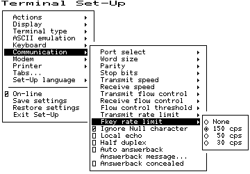 |
2.9.11 Ignore Null Character
When this menu item is selected, the terminal ignores received NUL control codes.
2.9.12 Local Echo
With Local echo enabled, most characters sent from the keyboard to the host are also displayed on the screen. The answerback message and XON/XOFFs are not echoed locally. Everything else is.
This feature corresponds to the SRM control function described in Chapter 5, ANSI Control Functions.
Local echo is different from the "Local" setting of On-line in the main menu of the Set-Up directory. Local echo causes keystrokes to be echoed on the screen, but it does not direct keyboard input to the ANSI parser, which also updates the screen. Local echo is temporarily disabled when the terminal is in either Local mode or Local Controller mode, because the keyboard input is already being redirected to the screen through the parser or to the printer.
2.9.13 Half Duplex
You can enable or disable Half duplex communication. The default is disabled. Half duplex communication is available only on the Comm1 communications port. If communication is set for the Comm2 port, this feature is disabled (dimmed).
2.9.14 Auto Answerback
This item is used to enable or disable Auto answerback on power-up or upon connection. The factory default is disabled.
2.9.15 Answerback Message
The Answerback message . . . menu item invokes a dialog box with a 30-character limit. All characters that can be generated by the keyboard are legal in this field (including primary and secondary keyboard language characters). As such, no errors are reported, except when trying to enter more than 30 characters. In this case, the bell rings (if enabled), and no more characters are accepted. The factory default message is no message at all (a blank field). Only a single Answerback message is saved in the NVR. The last session from which a Save settings is performed overwrites this single Answerback message.
When this feature is selected, a dialog box is displayed with a reverse video text entry area 30 characters long. If an Answerback message is currently defined, the message is displayed in the text entry area. The ⌫ or Delete key can then be used to delete backwards and enter a new Answerback message.
If the Answerback message is concealed, the cursor is displayed in the first position of the text entry area. In this case, the existing Answerback message does not need to be deleted before entering a new message.
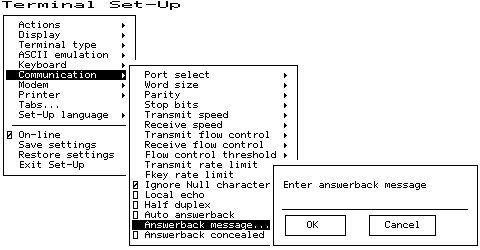 |
The Answerback message can be up to 30 characters in length. Control characters are displayed using the CRM font. Pressing Return enters a return character in the Answerback message. Pressing ⇓ with the highlighting cursor in the Answerback text field moves to the OK button.
The current Answerback message is displayed in the answerback dialog box unless Answerback concealed is selected. In this case, the previous Answerback message is not shown. Choosing the OK button to enter a new Answerback message clears the Answerback concealed check box.
2.9.16 Answerback Concealed
Changes to this field take effect immediately. The factory default is disabled.
If disabled, the Answerback message is visible in Set-Up. If enabled, the message is not visible and the text "<concealed>" replaces the message. The only way to return this field to disabled (visible) is to enter a new message.
2.10 Modem Menu
You can select several modem features using the menu shown in Figure 2–24.
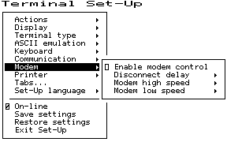 |
2.10.1 Enable Modem Control
The field allows you to select whether the additional hardware control signals at the interface connector are used for modem control. Modem control disabled is also referred to as "Data leads only." Refer to Chapter 9, Communications, for details on modem control signals.
This feature corresponds to DECMCM in Chapter 5, ANSI Control Functions.
2.10.2 Disconnect Delay
When modem control is enabled, the Disconnect delay feature determines the time allowed before the terminal disconnects from the communications line when the received line signal detect (RLSD) is lost. Disconnect delay is in effect only when RLSD (CD) is lost. If DSR is lost, the terminal performs a disconnect immediately. The following selections are available:
| • | 2 seconds |
| ◦ | 60 ms |
| ◦ | No disconnect |
All countries except the United Kingdom should use a delay of 2 seconds. The 60 ms delay is for use in the United Kingdom.
If the VT510 detects a loss of carrier and you selected No disconnect, the VT510 ignores RLSD (CD) after the beginning of the connection.
If you try to disconnect and reconnect the line, the VT510 checks if RLSD is asserted before granting the connection. Once it is connected, the terminal ignores the loss of carrier.
You can select disconnect delay through Set-Up or through control function DECSDDT. Refer to Chapter 9, Communications, for details on the connect and disconnect process.
2.10.3 Modem High Speed
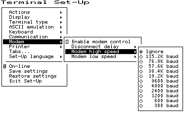 |
When modem control is enabled, the speed indicator signal (SI) from the modem may be used to select the communication rate. This feature sets the communication rate to be used when the speed indicator line is "on." Selecting Ignore causes the terminal to use its regular transmit and receive speeds as it would when modem control is disabled.
This feature can be invoked by DECSCS.
2.10.4 Modem Low Speed
These selections are the same as the modem high speed selections shown in Figure 2–25. When modem control is enabled, the speed indicator (SI) signal from the modem may be used to select the communication rate. This feature sets the communication rate to be used when the speed indicator line is "off." Selecting Ignore causes the terminal to use its regular transmit and receive speed as it would when modem control is disabled. This feature can be invoked by DECSCS.
2.11 Printer Menu
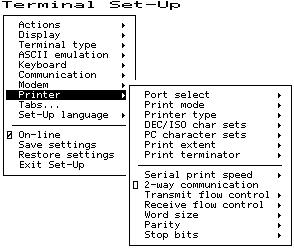 |
Printer features shown in Figure 2–26 correspond to the control functions listed in Table 2–8. These functions are described in Chapter 5, ANSI Control Functions and Chapter 10, Printer Port.
2.11.1 Port Select
The Port select menu is the same one that appears in the Communication menu. You can select the cable connections from either menu.
| • | S1=comm1 print=comm2 |
| ◦ | S1=comm1 print=parallel |
| ◦ | S1=comm2 print=comm1 |
| ◦ | S1=comm2 print=parallel |
2.11.2 Print Mode
The Print mode menu allows you to select the printer operating mode as follows:
| • | Normal |
| ◦ | Autoprint |
| ◦ | Controller |
We recommend that you do not save the Controller mode selection in NVR because this may result in a "hung" terminal if the printer does not have DTR asserted.
Local echo is temporarily disabled when the terminal is in either Local mode or Local Controller mode, because the keyboard input is already being redirected to the screen through the parser or to the printer.
| Set-Up Feature | Control Function |
|---|---|
| Port select | DECSCP |
| Print mode | MC |
| Printer type | DECSPRTT |
| DEC/ISO char sets | DECSDPT |
| PC character sets | DECSPPCS |
| Print extent | DECPEX |
| Print terminator | DECPFF |
| Serial print speed | DECSCS |
| 2-way communication | MC |
| Transmit flow control | DECSFC |
| Receive flow control | DECSFC |
| Word size | DECSPP |
| Parity | DECSPP |
| Stop bits | DECSPP |
2.11.3 Printer Type
You can select the printer type as follows:
| • | DEC ANSI |
| ◦ | IBM ProPrinter |
| ◦ | DEC + IBM |
2.11.4 DEC/ISO Character Sets
On the international versions of the terminal, you can enable the character set categories shown in Figure 2–27.
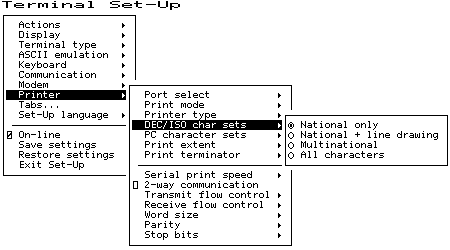 |
2.11.5 PC Character Sets
On the international versions of the terminal, you can enable the character set categories shown in Figure 2–28. The numbers in parentheses refer to standard PC code pages.
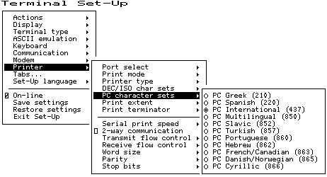 |
2.11.6 Print Extent
This selection allows you to print a full page or just the scroll region.
2.11.7 Print Terminator
The print terminator can be None or FF (form feed).
2.11.8 Serial Print Speed
Like the Communication menu speed selection (see Figure 2–21), you can select the serial printer speed from 300 to 115.2K baud. The default is 4800 baud.
2.11.9 2-Way Communication
This item allows you to enable and disable bidirectional communications on the printer port. The default is 2-way communication disabled.
2.11.10 Transmit Flow Control
The printer transmit flow control method can be one of the following:
| ◦ | None |
| • | XON/XOFF |
| ◦ | DSR (Data Send Ready) |
| ◦ | Both |
2.11.11 Receive Flow Control
The printer receive flow control method can be one of the following:
| ◦ | None |
| • | XON/XOFF |
| ◦ | DTR (Data Terminal Ready) |
| ◦ | Both |
2.11.12 Word Size
The printer word size can be 8 bits (default) or 7 bits.
2.11.13 Parity
You can select any of the following parity checks to the printer:
| • | None |
| ◦ | Even |
| ◦ | Odd |
| ◦ | Mark |
| ◦ | Space |
2.11.14 Stop Bits
For the printer, 1 (default) or 2 stop bits can be enabled.
2.12 Tabs . . .
The Tabs . . . menu item is used to invoke the Tab Set-Up dialog box, displaying a 132-column tab ruler. Figure 2–29 shows that tab stops are indicated by the letter T.
The highlighting cursor is initially displayed over the entire tab field. The normal character cursor appears in column 1 of the tab field.
The ⇐ and ⇒ keys move the cursor within the tab field. Pressing Tab advances the cursor to the next tab stop in the tab field (if any). The character cursor automatically wraps between the end of the first row and the beginning of the second row in the tab field.
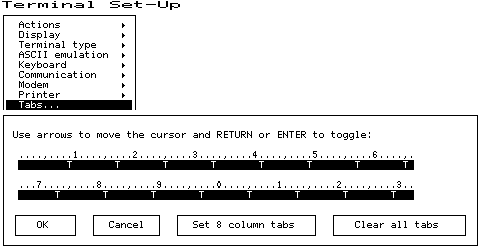 |
The labeled buttons allow you to clear all tabs or to set 8-column tabs directly. To set individual tabs:
- Position the cursor in the desired column.
- Press Enter to set or clear a tab in that column.
Tab setting can also be invoked by the HTS and DECST8C control functions.
2.13 Default All Modes
Table 2–9 lists the default for each feature in the Set-up Menu.
| From Set-up Menu . . . | Set-Up Feature | Default |
|---|---|---|
| Display ▹ | Columns per page | 80 |
| Clear on change | On | |
| Screen background | Dark | |
| Cursor display | Block, Blink, On | |
| Auto wrap | Off | |
| New line mode | Off | |
| Status display | Local status | |
| Scrolling mode | Slow smooth | |
| CRT Saver | On | |
| Show control characters | Off | |
| Terminal Type ▹ | Emulation mode | WYSE 160/60 Native |
| ASCII Emulation ▹ | Data lines | 24 |
| Character cell | 10 × 16 | |
| Pages | 1 × lines | |
| Attribute | Char | |
| Write protect attributes | Dim | |
| Page edit | Off | |
| Received CR | CR | |
| Recognize DEL | Off | |
| Enhance | On | |
| Autoscroll | On | |
| Autopage | Off | |
| Send ACK | On | |
| Auto Answerback | Off | |
| Font load | On | |
| Block mode | Off | |
| Block end | US/CR | |
| Keyboard ▹ | Keyboard language | North American |
| Caps lock function | Caps lock | |
| Keyclick volume | High | |
| Warning bell volume | High | |
| Margin bell | Off | |
| Keyboard encoding | Character (ASCII) | |
| Auto repeat | On | |
| Communication ▹ | Port select | S1=comm1, print=parallel |
| Word size | 8 bits | |
| Parity | None | |
| Stop bits | 1 | |
| Transmit speed | 9600 baud | |
| Receive speed | Transmit speed | |
| Transmit flow control | None | |
| Receive flow control | XON/XOFF or XPC | |
| Flow control threshold | Low (64) | |
| Transmit rate limit | 150 cps | |
| Fkey rate limit | 150 cps | |
| Auto answerback | Off | |
| Answerback concealed | Off | |
| Printer ▹ | Port select | S1=comm1, print=parallel |
| Print mode | Normal | |
| Set-Up Language ▹ | English | |
| Tabs . . . ▹ | Set 8 column tabs |